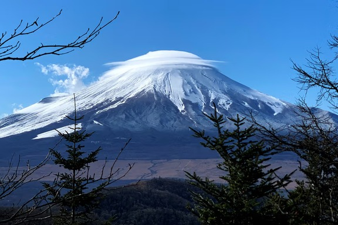
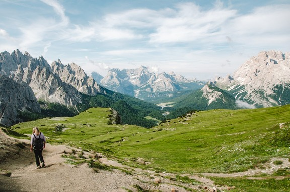
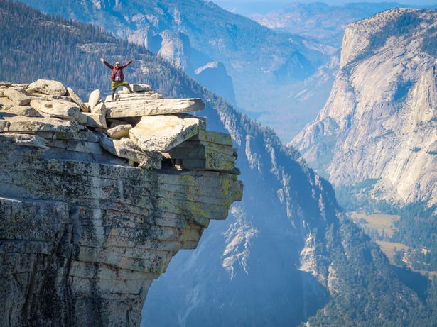

Location: Yamanashi, Japan
Difficulty: 3.5 / 5 Stars ★★★
Elevation Gain: 1,450 m (4,757 ft)
Distance: 14 km (8.7 miles)
Price:Yen 4,000 ($26 USD)
A long zig-zagging climb up volcanic gravel and rock. It requires solid endurance to handle the high elevation, but requires no technical climbing skills.

Location: Tyrol/Veneto, Italy
Difficulty: 3 / 5 Stars ★★★
Elevation Gain: 400 m (1,312 ft)
Distance: 10 km (6.2 miles loop)
Price: $33 USD
A high-altitude, world-famous loop trail winding around three massive limestone spires. The paths are uneven and gravel-lined, but manageable for casual hikers.

Location: California, USA
Difficulty: 4 / 5 Stars ★★★★
Elevation Gain: 1,460 m (4,800 ft)
Distance: 25 km (16 miles)
Price: $45 Entrance & Permit Fee
A long day-hike through pine forests and stone stairs, finishing with a steep climb up the back of the granite dome holding onto metal cables.